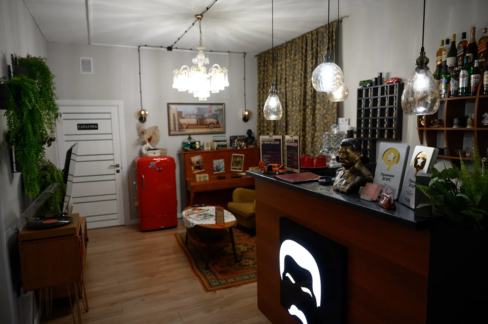
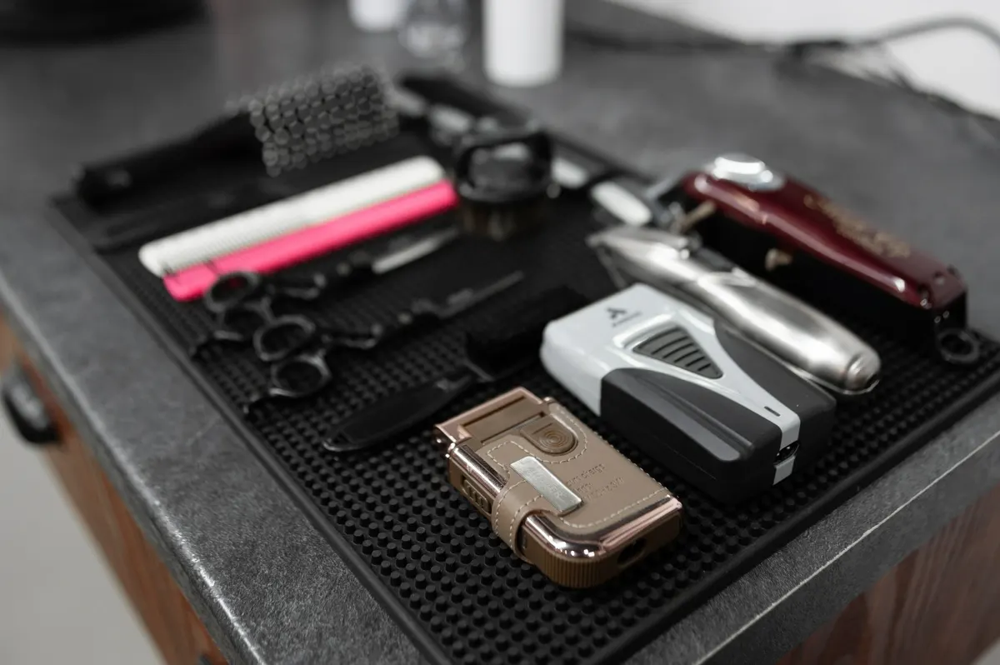
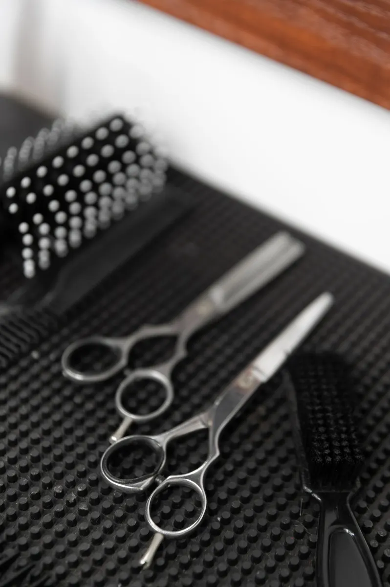
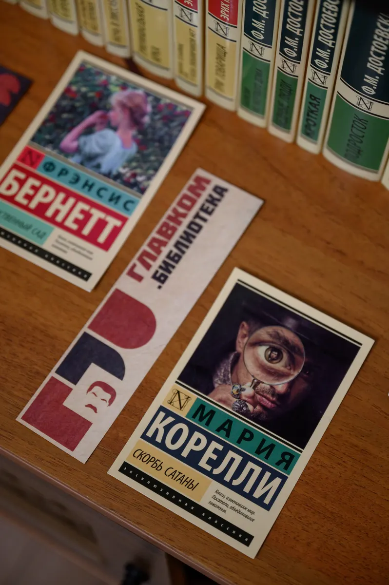

Барбершоп · Йошкар-Ола
Главком: барбершоп в Йошкар-Оле с онлайн-записью
Выберите услугу, день и время на странице - запись без звонка. Стоимость назовёт администратор при записи.
- Запись онлайн, без звонка
- Ждём: ежедневно, 10:00–20:00
- 5,0 и 95 отзывов на Яндекс.Картах

Услуги
Стоимость назовёт администратор при записи.
Что можно выбрать
- Мужская стрижкав отзыве: барбер всё сделал аккуратно и внимательноуточнить
- Стрижка для девушекв отзыве: здесь стригут девушекуточнить
- Детская стрижкав отзыве: можно прийти с ребёнкомуточнить
- Холодное восстановлениев отзыве: процедура у мастера Джемыуточнить
Как записаться
Пишете нам
Выберите направление, дату и время в форме ниже или напишите в мессенджер.
Уточняем детали
Администратор подтверждает время и отвечает на вопросы.
Приходите
Адрес: Йошкар-Ола, площадь Революции, 5.



Что пишут гости
Уютная обстановка
В отзывах: приятно пахнет, интерьер уютный, предлагают чай и кофе.
Подбирают стрижку
В отзыве: проконсультировали и помогли подобрать подходящую стрижку.
Заботятся о комфорте
В отзывах: мастер уточнял, комфортно ли мне, всю стрижку заботились о комфорте.
Отзывы с Яндекс.Карт
«Была на процедуре «холодное восстановление» у мастера Джемы. Все прошло идеально: уютная обстановка, коллектив замечательный, предложили чай кофе, порекомендовали домашний уход и дали советы, как ухаживать! Мастер Джема милая девушка, всегда уточняла комфортно ли мне, мило беседовала, и при этом выполнила свою работу идеально, спасибо вам большое 🙏 Рекомендую!!!»
Елизавета Дудина · 31 мая
«Мастеру Елене ( с красными волосами ) руки целовала 🙏🙏 меня проконсультировали и помогли подобрать подходящую стрижку. Предложили чай, кофе, конфетки, фильм. Всю стрижку заботились о моем комфорте и удобстве. В салоне приятно пахнет, дизайн и интерьер очень уютный. Стрижка кстати тоже получилась шикарной 😘 Вообщем всем советую, мечта, а не салон ❤️»
kissa · 31 августа 2025
«Прекрасное место с невероятно уютной и приятной атмосферой, где действительно можно расслабиться и отдохнуть душой. Отдельно хочется отметить барбера Женю — настоящий профессионал своего дела, всё сделал аккуратно и внимательно. Остался очень доволен, обязательно вернусь снова!»
Валерия Фоминых · 13 сентября
Отзывы с карточки на Яндекс.Картах.
Частые вопросы
Как записаться?
Выберите направление, день и время в форме на странице или напишите в мессенджер. Администратор подтвердит запись.
Где вы находитесь?
Йошкар-Ола, площадь Революции, 5. ежедневно, 10:00–20:00.
Сколько это стоит?
Стоимость назовёт администратор при записи. Актуальные цены уточняйте у него.
Выберите время - подтвердим запись
- Адрес
- площадь Революции, 5, Йошкар-Ола
- Часы
- ежедневно, 10:00–20:00
- Телефон
- +7 (927) 683-82-02